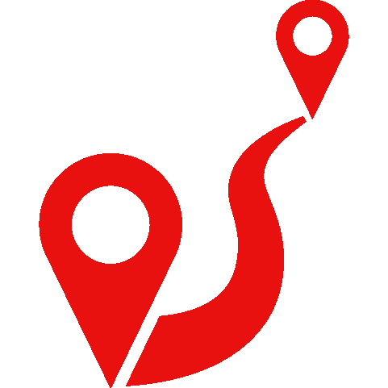
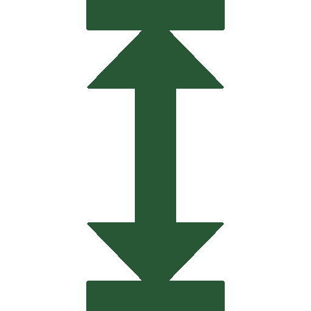
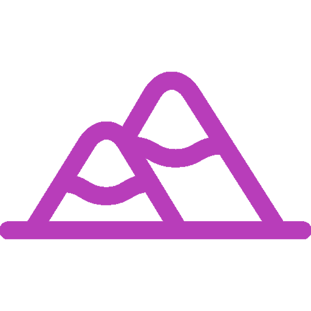
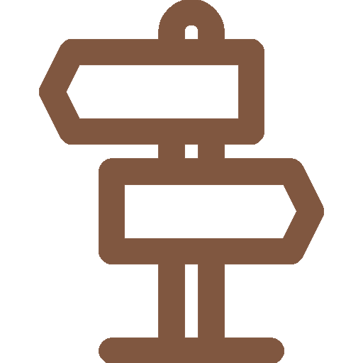

Rusinowa Polana
Wędrówkę rozpoczynamy na Wierchu Porońcu (zw. także Wierchporońcem). Znajduje się tu niewielki, płatny parking oraz budka, w której turyści mogą kupić bilety wstępu na teren Tatrzańskiego Parku Narodowego czynna od 15 kwietnia do 30 września. Szlak ten właściwie tylko początkowo wiedzie nieco w górę, po kilkunastu minutach biegnie już niemal płasko. Z lewej strony towarzyszą nam widoki na Magurę Spiską, Tatry Bielskie oraz Tatry Wysokie. Wygodna ścieżka prowadzi głównie lasem, co sprzyja wędrówkom w upalne, słoneczne dni. Po ok. 1 godz. spokojnego marszu docieramy na Rusinową Polanę, skąd roztacza się szeroka panorama na Tatry Wysokie, głównie ich słowacką część oraz na Tatry Bielskie. Jest to miejsce niezwykle popularne wśród turystów i chętnie odwiedzane. Oprócz drewnianych ław i stołów, przy których można odpocząć, na skraju polany stoi szałas, gdzie w sezonie wypasowym, w ramach kulturowego wypasu owiec, można kupić produkty z owczego mleka (sery, żętyca - zéntyca). Oprócz wspomnianego budynku, znajduje się tu także drugi, dziś nieczynny, szałas, w którym przed laty przebywała chętnie goszcząca turystów Babka – Aniela Kobylarczyk.
 Dystans: 3,2 km
Czas przejścia: 1 godz. 00 min
Różnica wzniesień: 144 m↗ 35 m↘
Najwyższy punkt: 1210 m n.p.m.
Szlak: zielony, niebieski